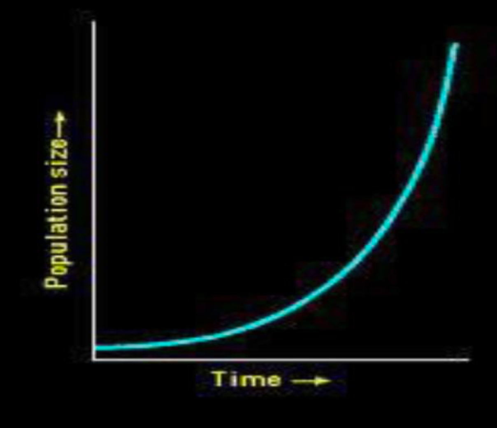
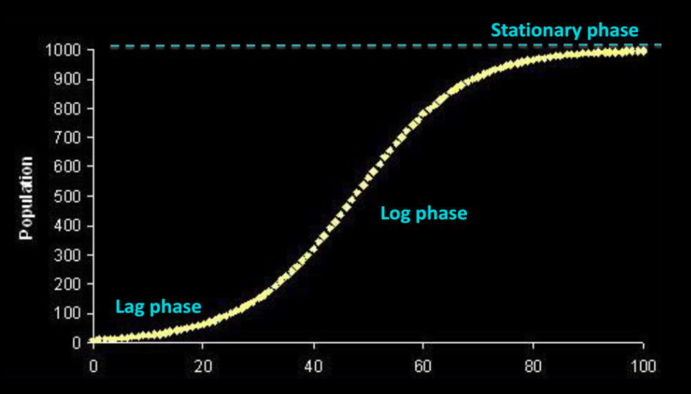

Population dynamics is a branch of ecology that studies how populations of organisms change in size and composition over time and the factors that cause these changes. It is crucial for understanding how ecosystems function and how human activities impact them.
Key Concepts in Population Dynamics:
- Population Size (N): The total number of individuals in a population at a given time.
- Population Density: The number of individuals per unit area or volume.
- Population Growth: The change in population size over time. Influenced by births, deaths, immigration, and emigration.
- Formula for Population Change: ΔN = (Births + Immigration) − (Deaths + Emigration)
- Birth Rate (b): The number of births per individual per unit time.
- Death Rate (d): The number of deaths per individual per unit time.
- Intrinsic Rate of Natural Increase (r): The potential growth rate under ideal conditions. r = b − d.
- Exponential Growth: Occurs when resources are unlimited, resulting in a J-shaped curve.
- Logistic Growth: Occurs when resources are limited, resulting in an S-shaped curve.
- Carrying Capacity (K): The maximum population size the environment can support.
- Density-Dependent Factors: Affected by population density (e.g., competition, disease).
- Density-Independent Factors: Not dependent on population size (e.g., disasters, climate).
- Population Distribution: Spatial arrangement of individuals (clumped, uniform, random).
- Age Structure: Proportions of individuals in different age groups.
- Survivorship Curves: Graphs showing survival rates at different ages (Type I, II, III).
- r-selected Species: High reproduction, rapid development, small offspring.
- K-selected Species: Low reproduction, slow development, large offspring, stable environments.
Exponential Growth
- We say that a population is exponentially growing when its growth curve looks like a “J”.
- All populations have or will have a section of exponential growth in their growth curve.
- A population will have exponential growth when it has access to more than required resources, low competition, and low predation — when its population is far below the carrying capacity.
Logistic Growth

- Characterised by an “S” shape.
- Shows the population tapering off once it reaches the carrying capacity.
- Density dependent factors contribute significantly to slowing growth rate.
- If carrying capacity increases, population will grow exponentially again.
Phases of Logistic Growth
- Lag Phase:
- Initial phase where population is small, growth is slow.
- Organisms acclimate, find mates, and prepare for reproduction.
- Births ≈ deaths → little net growth.
- Exponential Growth Phase (Log Phase):
- Resources are abundant; population grows rapidly.
- Birth rate > death rate → exponential increase.
- Deceleration Phase (Stationary Phase):
- Resources become limited → competition increases.
- Birth rate decreases; death rate increases.
- Growth rate slows and stabilizes near carrying capacity (K).